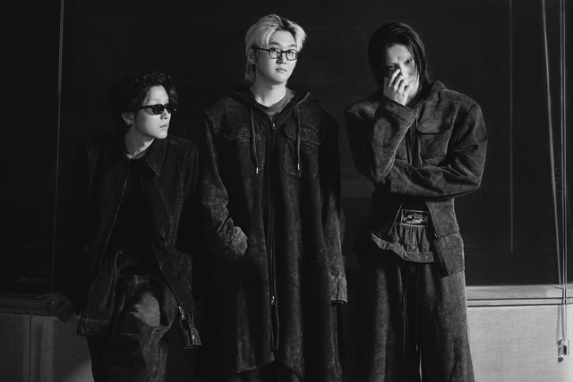
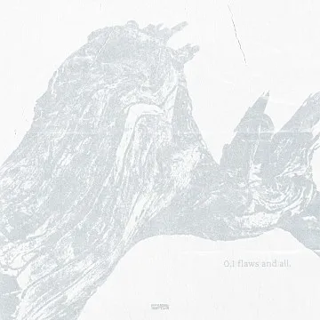

Wave to Earth - love.
What is love to wave to earth?
Listen through the shorts below
Listen to the love they convey
Click the image below

The story of the new wave they are telling

▶ wave to earth - 0.1 flaws and all_documentary 01
▶ wave to earth - 0.1 flaws and all_documentary 02